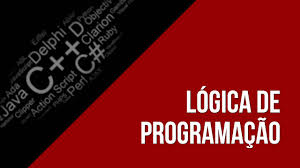

Programação e Algoritmos

Descrição
O curso Introdução à Lógica de Programação objetiva ajudar o aluno a compreender a lógica de programação antes mesmo de trabalhar com quaisquer linguagens.
Composto por conceitos, definições e exercícios práticos, o curso visa fazer com que o aluno desenvolva seu raciocínio lógico,
enquanto conhece princípios básicos de desenvolvimento como algoritmos, sistemas de numeração, variáveis, entre outros.
Bases Tecnologicas
- Conceito de desing Grafico aplicado a construção de aplicativos e sites.
- Comandos da linguagem de programação.
- Programação estruturada.
- Programação modular.
- Tipos de dados estruturados.